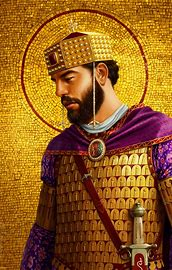
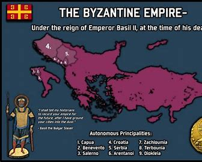

Basil II, known as the "Bulgar Slayer," was one of the most formidable Eastern Roman (Byzantine) emperors, reigning from 976 to 1025 CE. His reign is marked by relentless military campaigns and administrative reforms that solidified the empire's power. Basil's military genius was evident in his long and grueling wars against the Bulgarians, culminating in the decisive victory at the Battle of Kleidion in 1014, where thousands of Bulgarian soldiers were reportedly blinded. This victory earned him his infamous epithet and expanded Byzantine influence in the Balkans.
Beyond his battlefield exploits, Basil II was an astute administrator who strengthened the central authority of the empire. He curtailed the power of the aristocracy, supporting the peasantry to maintain a robust tax base and a steady supply of soldiers. Known for his austere lifestyle and dedication to governance, Basil avoided the courtly extravagance typical of his predecessors. His death in 1025 marked the end of a golden era for the Byzantine Empire, as his policies and conquests ensured stability and prosperity during his reign.
Basil II’s reign also showcased his diplomatic prowess, as he skillfully navigated the complex web of alliances and rivalries in both the East and the West. He fostered ties with the Kievan Rus, a relationship cemented by the marriage of his sister, Anna, to Prince Vladimir of Kiev. This alliance not only secured Byzantine influence in the region but also facilitated the Christianization of the Rus, a significant cultural and religious milestone. Basil was equally adept at managing internal affairs, balancing the ambitions of powerful landowners with the interests of the empire. His focus on maintaining a disciplined and loyal army, coupled with his economic reforms, left the Byzantine Empire more centralized and secure than it had been in decades. Basil II’s legacy as a warrior-emperor and shrewd ruler ensured his place as one of the greatest figures in Byzantine history.